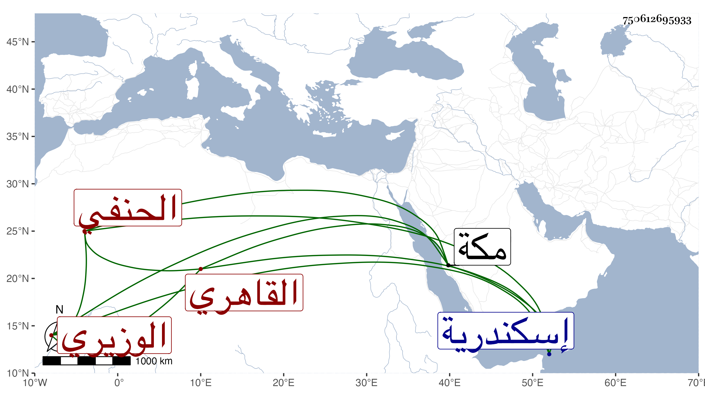

0902Sakhawi.DawLamic.ITO20230111-ara1.EIS1600.750612695933
Biography ID: 750612695933
858
محمد بن إبراهيم بن أحمد بن مخلوف بن غالي بن عبد الظاهر بن قانع ابن عبد الحميد بن سالم بن عبد البارئ بن راضي بن حامد بن عطاء الشمس أو السعد أبو الفتح البرسيقي نسبة لبعض أعمال إسكندرية ثم القاهري الوزيري الحنفي ويعرف بالسمديسي وليس هو منها وإنما هو من أبي خراش فتحامى النسبة خراشيا وانتسب كذلك مع عدم تجاورهما فلو انتسب لما يجاورها كان أشبه . ولد في رابع عشر ربيع الأول سنة ثلاث وخمسين وحفظ القرآن وتلا به للسبع على جعفر السنهوري ، ويقال أنه أحكم الفن وحقق التجويد ، وقرأ على الفخر الديمي متونا وغيرها كشرح ألفية العراقي شبه الرواية بحيث كتب إلى بعض من قرأ على أنه كان يسأله عن أماكن منها فيوضحها له وتفقه قليلا بالأمين الأقصرائي ونظام وصلاح الدين الطرابلسي وكذا اشتغل في الأصول والعربية عند حمزة المغربي وغيره وقرأ على حمزة المطول وربما أخذ عن الخطيب الوزيري بلديه وتميز قليلا ووثب بعد الأمين فاستقر دفعة واحدة في مشيخة الحنفية بالجانبكية حين كان تنبك قرا دوادارا ثانيا بعناية مغلباي البهلوان الأشرف إينال وقام شيخه نظام و قعد سيما وهو شيخ المقرر أيضا وهو والله معذور بل وأعطاه قبل ذلك مسجدا جدده بالقرب من الأيتمشية وأسكنه قاعدة به وحج صحبته حين كان يشبك جل أمير الحاج ثم استنزل الشمس الجلالي عن مشيخة الأيتمشية نفسها وهو أحد صوفية الأشرفية ويوصف بالدين والخير والعقل بل قرأت بخط من أشرت لأنه كان يسأله أنه جلس معه في ابتدائه فوجده مجموع فضائل غير أن في لسانه رخاوة ، قال : ونعم الرجل صلاحا وعملا لولا تكبر زائد فيه أعاذه الله من شر نفسه انتهى . وقد قدم مكة بحرا سنة سبع وتسعين صحبة أميره بردبك الخازندار حين مجيئه لجدة على نيابتها وكان مقيما تحت ظله بها لم يجئها إلا معه وفوت رمضان كله ثم لما قدم لقيني وصار يسألني عن أشياء فكتب له أجوبتها ورام نسخة من شرحي للألفية فما تهيأ له ذلك ورجع وعزمه مستقر على استكتابه فإنه التمس كتابي لولد أخي بعارية النسخة التي بخط والده لمقابلة الولد معي بعضها بحيث صارت آخر النسخ بالنسبة لما قوبل وكذا أخذ مؤلفي الخصال الموجبة للظلال وجود عليه بعض الطلبة القرآن .
